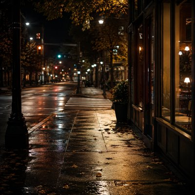

Memory has a way of keeping the smallest details while letting the bigger picture fade. A missed stop, a passing remark, a drink someone recommended without much thought at the time. We may forget most of an experience, only to find that a few fragments remain — and that they somehow mean more to us later than they did when they happened.
“Maybe There Still Are” follows those fragments through two place names and a glass of sangria. It isn't an attempt to reconstruct a day or explain what it all meant. Instead, it lingers in the space between remembering and understanding, where familiar details begin to connect in ways they never did before.
Perhaps the pieces were always there. Perhaps time simply gave us a reason to look again.
Past Alberta Before either of us noticed I checked the time You were still looking One stop too far You didn't seem worried I probably was But I tried not to be Outside the door You said it in my language "You've got a day coming up" Not quite the way I'd say it Still somehow That sounded different One stop too far You said the Sangria Was supposed to be good I said sure Didn't think much of it then One stop too far I remember getting there More than being there The things I usually notice Never really showed up When the wine list came I skipped the ritual Went straight to the bottom One stop too far You said the Sangria Was supposed to be good I said sure Didn't think much of it then One stop too far Funny what stays Not the menu Not the wine Not even what we ordered Just Alberta Urdaneta ...and Sangria Looking back There seem to be more pieces now Maybe there always were Maybe there still are Somewhere between Alberta And Urdaneta